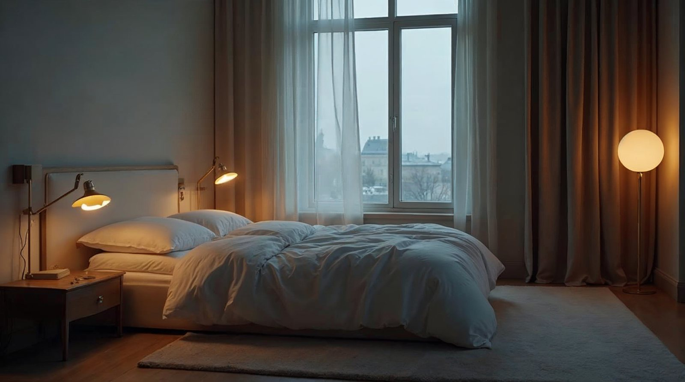
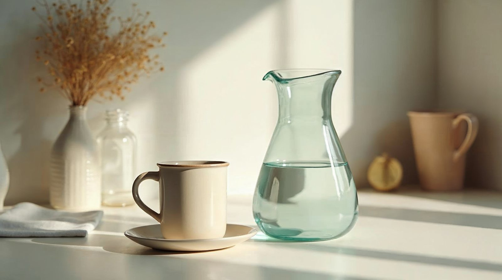
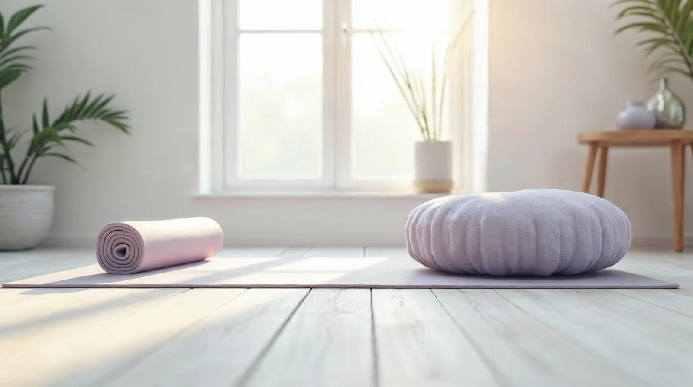
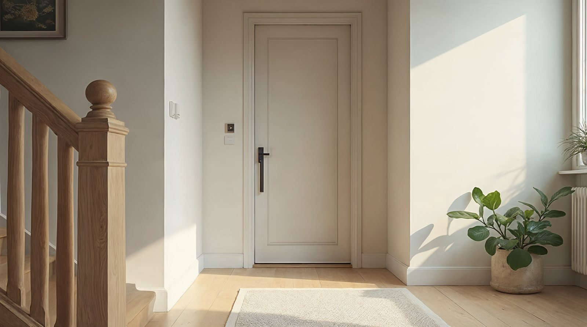

이종호 한의사 감수좋은꿈참사랑한의원 대표원장 (한의사 면허번호 19769)발행 2026-11-26 · 수정 2026-11-26
이 글의 차례
새벽 세 시, 조용한 집 안에서 방문 열리는 소리가 납니다. 어르신이 화장실을 다녀오시는 소리입니다. 잠시 뒤 또 한 번, 동이 트기 전에 또 한 번. 아침이 되면 어르신은 밤새 깊이 못 주무셨다며 피곤해하십니다.
밤에 화장실 때문에 자주 깨시는 것, 그리고 기침하거나 급하게 화장실에 가실 때 소변이 조금씩 새는 것은 어르신들이 쉽게 꺼내지 못하는 고민입니다. 나이 탓이려니 하고 혼자 참고 지내시는 분이 무척 많습니다.
하지만 이 고민은 잠, 기운, 바깥 활동, 그리고 넘어짐과도 이어져 있습니다. 밤에 여러 번 깨시면 낮에 기운이 떨어지고, 어두운 새벽에 서둘러 화장실로 가시다 넘어지는 일도 생깁니다. 소변이 샐까 걱정되어 외출을 줄이시는 분도 있습니다.
이 글에서는 어르신 잦은 소변과 요실금이 왜 생기는지, 어떻게 나눠 살피는지, 생활에서 무엇을 해 볼 수 있는지 차근차근 정리해 보겠습니다.
어르신 잦은 소변과 요실금은 어떤 모습인가요
어르신들이 말씀하시는 소변 고민은 크게 몇 가지로 나눠 볼 수 있습니다. 낮에 화장실을 자주 가시는 것, 밤에 자다가 여러 번 깨시는 것, 마려우면 참기 힘들어 급하게 가시는 것, 그리고 소변이 의지와 상관없이 새는 것입니다.
소변이 새는 모습도 나눠 볼 수 있습니다. 기침이나 재채기, 무거운 것을 들 때 새는 경우가 있고, 갑자기 강하게 마려워 화장실까지 가는 사이에 새는 경우가 있습니다. 두 가지가 함께 있는 분도 많습니다.
또 소변을 보고 나서도 시원하지 않고 남은 느낌이 있다거나, 소변 줄기가 가늘고 힘을 줘야 나온다거나, 방울방울 떨어진다는 분도 있습니다. 이런 모습은 남성 어르신에게서 특히 많이 듣는 이야기입니다.
왜 나이 들수록 소변이 잦아지고 새기 쉬울까요
연세가 들면 몸의 여러 부분이 조금씩 함께 달라집니다. 어르신 잦은 소변과 요실금은 대개 다음 가운데 몇 가지가 겹쳐서 생깁니다.
- 방광이 탄력을 잃어 담을 수 있는 양이 줄어든 경우
- 방광이 예민해져 조금만 차도 마려운 경우
- 골반 아래 근육과 소변을 잠그는 힘이 약해진 경우
- 남성은 전립선이 커져 소변길이 좁아진 경우
- 밤에 콩팥이 만드는 소변 양이 늘어난 경우
- 저녁 물, 차, 술, 소변을 늘리는 약의 영향
밤에 소변이 늘어나는 것은 방광만의 문제가 아닌 경우가 많습니다. 낮에 다리에 고였던 물이 누우면 다시 몸 안으로 돌아오면서 밤에 소변으로 나오기도 하고, 잠이 얕아 깨는 김에 화장실에 가시는 경우도 있습니다.
여성 어르신은 출산과 폐경을 거치며 골반 아래 근육이 약해지고 요도 주변 조직이 얇아져 기침할 때 새는 경우가 많습니다. 남성 어르신은 전립선이 커지면서 소변을 다 비우지 못해 자주 마렵고 밤에 깨는 경우가 흔합니다.
한의학에서는 이런 모습을 아랫배와 허리의 기운이 약해져 소변을 단단히 붙잡지 못하는 모습, 몸이 차서 방광이 예민해진 모습 등으로 나눠 봅니다. 아랫배와 손발이 찬지, 허리와 다리에 힘이 없는지를 함께 여쭙는 이유입니다.

밤 소변은 잠과 넘어짐까지 이어집니다
밤에 한두 번 깨시는 것은 연세가 들면 흔한 일입니다. 하지만 세 번 이상 깨시거나 깬 뒤 다시 잠들기 어려우시다면 잠의 질이 크게 떨어집니다. 낮에 졸리고 기운이 없으며, 그 때문에 낮잠이 길어지고 밤잠은 더 얕아지기도 합니다.
어두운 새벽에 잠이 덜 깬 채 서둘러 화장실로 가시다 보면 넘어지기 쉽습니다. 일어나자마자 걸으시면 순간적으로 어지러울 수 있고, 급한 마음에 문턱이나 이불에 걸리기도 합니다. 밤 소변을 살피는 것은 넘어짐을 줄이는 일이기도 합니다.
반대로 잠이 얕아서 화장실에 가시는 경우도 있습니다. 소변이 마려워서 깨신 건지, 깨고 나서 마려운 건지 구분해 보시면 도움이 됩니다. 앞의 경우는 소변 쪽을, 뒤의 경우는 잠 쪽을 더 들여다봅니다.
밤에 깨신 뒤에는 시계를 보지 마시고, 화장실을 다녀와 바로 불을 끄고 누우세요. 몇 시인지 확인하는 순간 '또 깼구나' 하는 걱정이 잠을 더 멀리 보내기도 합니다. 깬 김에 휴대폰이나 텔레비전을 켜는 것도 피하시는 것이 좋습니다.
비슷해 보여도 나눠 볼 것들
소변을 볼 때 따갑고 아프거나, 소변 색이 탁하고 냄새가 심해졌다면 방광염 같은 감염일 수 있습니다. 어르신은 감염이 있어도 열이 크게 나지 않고 기운이 없거나 정신이 흐려지는 모습으로 나타나기도 하니, 이런 변화가 있다면 병원에서 소변 검사를 받아 보세요.
목이 자주 마르고 물을 많이 드시는데 소변도 많이 보신다면 혈당을 확인해 볼 필요가 있습니다. 다리가 붓고 밤에 소변이 유난히 많다면 심장이나 콩팥 쪽도 내과에서 함께 살펴보시는 것이 좋습니다.
소변 줄기가 점점 가늘어지고 다 보고 나서도 남은 느낌이 계속되는 남성 어르신은 비뇨의학과에서 전립선과 남은 소변 양을 확인해 보시길 권합니다. 여성 어르신의 요실금도 비뇨의학과나 산부인과에서 함께 상의할 수 있습니다.

어르신 소변 고민을 두고 자주 헷갈리는 것
첫째, 나이 들면 원래 그러니 방법이 없다는 생각입니다. 연세가 들며 소변이 잦아지는 것은 흔하지만, 물 드시는 시간, 저녁 음료, 다리 붓기, 골반 근육처럼 생활에서 바꿀 수 있는 부분이 생각보다 많습니다.
둘째, 소변이 새면 물을 줄이는 것이 답이라는 생각입니다. 물을 지나치게 줄이면 소변이 진해져 방광이 더 예민해지고, 변비가 생겨 방광을 누르기도 합니다. 양을 줄이기보다 시간을 옮기는 쪽이 좋습니다.
셋째, 밤에 깨는 것은 모두 방광 탓이라는 생각입니다. 잠이 얕아서 깨는 김에 화장실에 가시는 경우도 많고, 낮 동안 다리에 고인 물이 밤에 소변으로 나오는 경우도 있습니다. 그래서 잠과 다리 붓기를 함께 살핍니다.
넷째, 요실금은 여성만의 고민이라는 생각입니다. 남성 어르신도 전립선이 커지거나 수술을 받으신 뒤, 또는 소변을 다 본 뒤 방울방울 떨어지는 모습으로 고민하시는 경우가 많습니다. 부끄러워하지 마시고 말씀해 주세요.
변비도 소변과 가깝습니다. 장에 변이 오래 차 있으면 바로 옆의 방광을 눌러 소변이 잦아지거나 시원하지 않게 느껴질 수 있습니다. 화장실 사정을 함께 여쭙는 이유입니다.
먼저 이렇게 여쭙니다
처음 오시면 대략 이런 순서로 여쭙니다. 미리 생각해 오시면 이야기가 수월해집니다.
- 낮과 밤에 각각 몇 번 정도 화장실에 가시나요?
- 소변이 새는 때가 있다면 기침할 때인가요, 급하게 마려울 때인가요?
- 저녁 식사 뒤로 물, 차, 국, 과일은 어느 정도 드시나요?
- 소변 줄기가 약하거나 다 본 뒤에도 남은 느낌이 있나요?
- 저녁이 되면 다리가 붓나요?
- 드시는 약 가운데 소변을 늘리는 약이 있나요? 언제 드시나요?
소변을 늘리는 약을 저녁에 드시고 계신다면, 드시는 시각을 바꿀 수 있는지 처방한 선생님과 상의해 보시는 것도 방법입니다. 혼자 시각을 바꾸지 마시고 꼭 여쭤 보세요.
잠드는 시각과 깨는 시각, 깬 뒤 다시 잠드는 데 걸리는 시간, 낮잠을 얼마나 주무시는지도 함께 여쭙니다. 밤 소변과 잠은 서로 맞물려 있어서 한쪽만 봐서는 흐름이 잘 보이지 않기 때문입니다.

일상에서 먼저 해 볼 수 있는 것
생활 습관 몇 가지만 바꿔도 밤에 깨는 횟수가 줄어드는 분이 많습니다. 하나씩 해 보시고 기록으로 확인해 보세요.
- 물은 오전과 낮에 충분히, 저녁 식사 뒤로는 조금씩만 드시기
- 저녁에는 커피, 녹차, 술처럼 소변을 늘리는 음료 줄이기
- 저녁 국물과 짠 반찬 줄이기
- 오후에 30분 정도 다리를 심장 높이로 올리고 쉬기
- 잠자리에 들기 직전에 한 번 더 화장실 다녀오기
- 화장실까지 가는 길에 작은 수면등 켜 두기
물을 무작정 줄이시면 변비가 생기거나 소변이 진해져 방광이 더 예민해질 수 있습니다. 하루 전체 물 양은 지키면서 드시는 시간만 앞쪽으로 옮기는 것이 좋습니다. 물 제한을 받고 계신 분은 그 지시를 따르셔야 합니다.
다리가 잘 붓는 분은 오후에 다리를 올리고 쉬시면 낮 동안 고인 물이 잠들기 전에 미리 소변으로 나와 밤 소변이 줄어드는 경우가 있습니다. 낮에 걸으시며 종아리를 움직이는 것도 도움이 됩니다.
골반 아래 근육을 기르는 운동도 해 볼 만합니다. 소변을 참듯이 아래쪽을 3~5초 조였다가 천천히 풀기를 10번 정도, 하루 두세 번 해 보세요. 배나 엉덩이에 힘을 주지 않고 아래쪽만 조이는 것이 요령입니다. 몇 주 꾸준히 하셔야 차이를 느끼십니다.
급하게 마려울 때 바로 달려가기보다 잠시 멈춰 서서 아래쪽을 몇 번 조이고 숨을 고른 뒤 천천히 걸어가 보세요. 마려운 느낌이 조금 가라앉는 것을 느끼실 수 있고, 서두르다 넘어지는 일도 줄어듭니다.
밤에 화장실에 가실 때는 눈을 뜨자마자 일어나지 마시고, 침대에 잠시 걸터앉아 숨을 고른 뒤 일어나세요. 화장실 가는 길의 문턱이나 깔개, 전선은 미리 치워 두시면 좋습니다.
아랫배와 허리를 따뜻하게 하는 것도 도움이 됩니다. 몸이 차면 방광이 예민해져 조금만 차도 마려운 느낌이 들기 쉽습니다. 잠자리에 드시기 전 아랫배에 따뜻한 수건을 잠시 얹어 두시거나, 얇은 배 덮개를 두르고 주무셔 보세요.
외출하실 때는 미리 화장실 위치를 알아 두시고, 출발 전에 한 번 다녀오시면 마음이 한결 편해집니다. 걱정 때문에 바깥 활동을 줄이시면 다리 힘과 기운이 함께 떨어지니, 짧은 산책부터 이어 가 보세요.
한의원에서 함께 살필 수 있는 경우
- 비뇨의학과 진료와 함께 아랫배와 손발이 차고 소변이 잦은 경우
- 밤에 자주 깨고 다시 잠들기 어려워 낮에 기운이 없는 경우
- 허리와 다리에 힘이 없고 소변을 참는 힘도 약해진 경우
- 저녁이면 다리가 붓고 밤에 소변이 많아지는 경우
- 소변 걱정으로 외출이 줄고 마음이 위축된 경우
좋은꿈참사랑한의원에 오시면 먼저 아래 '먼저 확인이 필요한' 신호가 없는지부터 봅니다. 그다음 맥을 짚고, 아랫배와 손발의 온도, 허리와 다리의 힘, 붓기와 잠을 함께 여쭙습니다.
진찰한 내용을 바탕으로 생활에서 바꿔 볼 것 하나와 함께 침, 온열 관리, 한약 상담 가운데 지금 상태에 맞는 것을 고릅니다. 한약을 상의할 때는 드시는 약을 모두 확인한 뒤 신중하게 정하고, 처방받은 약은 처방한 선생님과 상의 없이 멈추지 않습니다.
어르신 잦은 소변과 요실금은 비뇨의학과, 산부인과, 내과 진료와 함께 가는 것이 좋습니다. 소변 검사와 전립선, 방광 확인은 병원에서 하시고, 한의원에서는 그 사이의 냉기, 기운, 잠을 함께 살핀다고 생각해 주세요.
이렇게 기록해 오시면 상담이 쉬워집니다
소변 고민은 사흘만 기록해 보셔도 많은 것이 보입니다. 이를 배뇨 일지라고 부르는데, 병원에서도 자주 권하는 방법입니다.
- 화장실에 간 시각(낮과 밤 구분)
- 가능하면 소변 양(계량컵 사용)
- 소변이 샌 때와 그때 하던 일
- 드신 물, 차, 커피, 술의 시각과 양
- 잠든 시각과 일어난 시각
- 저녁에 다리가 부었는지 여부
소변 양까지 재기 어려우시면 횟수와 시각만 적어 오셔도 충분합니다. 낮보다 밤 소변이 유난히 많은지, 한 번에 보는 양이 적은지 많은지에 따라 살피는 방향이 달라집니다.

가족이 함께 살펴 주시면 좋은 것
어르신은 소변 실수를 무척 부끄러워하셔서 가족에게도 숨기시는 경우가 많습니다. 속옷을 자주 빨아 두시거나, 외출을 피하시거나, 물을 지나치게 안 드신다면 조심스럽게 여쭤 봐 주세요. 탓하지 않는 말투가 가장 중요합니다.
밤에 화장실 가시는 길을 한번 함께 걸어 보시고 위험한 곳이 없는지 확인해 주세요. 침대에서 화장실까지 수면등을 켜 두고, 욕실 바닥에는 미끄럼 방지 매트를, 변기 옆에는 손잡이를 두면 밤길이 훨씬 안전해집니다.
이런 증상은 먼저 확인이 필요합니다
- 소변이 전혀 나오지 않으면서 아랫배가 부풀고 아픈 경우
- 소변에 피가 섞이거나, 열과 오한이 나며 옆구리가 아픈 경우
이런 신호가 있으면 한의원보다 가까운 병원이나 응급실을 먼저 찾으세요.
함께 읽으면 좋은 글
- 자다가 소변 때문에 깨면 잠과 어떤 관련이 있고, 무엇을 살펴보나요?
- 기침할 때 새거나 화장실까지 참기 힘든 요실금, 복압성과 절박성은 어떻게 나눠 살피나요?
- 전립선 비대가 있다는 말을 들었을 때, 비뇨의학과 치료와 함께 생활에서는 무엇을 살피나요?
- 나이 들며 잠이 얕아지고 밤에 자주 깨는 어르신 불면은 어떻게 살피나요?
- 70대 어르신 집의 욕실과 현관은 낙상을 줄이려면 어떻게 점검하나요?
여쭙는 것
- 낮과 밤에 각각 몇 번 정도 화장실에 가시나요?
- 소변이 새는 때가 있다면 기침할 때인가요, 급하게 마려울 때인가요?
- 저녁 식사 뒤로 물, 차, 국, 과일은 어느 정도 드시나요?
생활에서 해 볼 것
- 물은 오전과 낮에 충분히, 저녁 식사 뒤로는 조금씩만 드시기
- 저녁에는 커피, 녹차, 술처럼 소변을 늘리는 음료 줄이기
- 저녁 국물과 짠 반찬 줄이기
한의원에서 함께 살필 것
- 비뇨의학과 진료와 함께 아랫배와 손발이 차고 소변이 잦은 경우
- 밤에 자주 깨고 다시 잠들기 어려워 낮에 기운이 없는 경우
- 허리와 다리에 힘이 없고 소변을 참는 힘도 약해진 경우
먼저 확인이 필요한 신호
- 소변이 전혀 나오지 않으면서 아랫배가 부풀고 아픈 경우
- 소변에 피가 섞이거나, 열과 오한이 나며 옆구리가 아픈 경우
한눈에 보는 표
| 구분 | 핵심 |
|---|---|
| 여쭙는 것 | 낮과 밤에 각각 몇 번 정도 화장실에 가시나요? 소변이 새는 때가 있다면 기침할 때인가요, 급하게 마려울 때인가요? |
| 생활에서 해 볼 것 | 물은 오전과 낮에 충분히, 저녁 식사 뒤로는 조금씩만 드시기 저녁에는 커피, 녹차, 술처럼 소변을 늘리는 음료 줄이기 |
| 한의원에서 함께 살필 것 | 비뇨의학과 진료와 함께 아랫배와 손발이 차고 소변이 잦은 경우 밤에 자주 깨고 다시 잠들기 어려워 낮에 기운이 없는 경우 |
| 먼저 확인이 필요한 신호 | 소변이 전혀 나오지 않으면서 아랫배가 부풀고 아픈 경우 소변에 피가 섞이거나, 열과 오한이 나며 옆구리가 아픈 경우 |
자주 묻는 질문
밤에 두 번 정도 깨는 건 괜찮은 건가요?
연세가 들면 밤에 한두 번 깨시는 것은 흔합니다. 다만 다시 잠들기 어렵거나 낮에 기운이 크게 떨어진다면 기록을 해 보시고 진료 때 함께 상의해 주세요.
소변이 샐까 봐 물을 거의 안 마시는데 괜찮을까요?
물을 너무 적게 드시면 소변이 진해져 방광이 더 예민해지고 변비도 생기기 쉽습니다. 하루 물 양은 지키되 오전과 낮에 나눠 드시고 저녁에만 줄여 보세요.
골반 근육 운동은 남성 어르신도 해도 되나요?
네, 남성 어르신도 하실 수 있습니다. 소변을 다 본 뒤 방울방울 떨어지는 분이나 참는 힘이 약해진 분께 도움이 될 수 있습니다. 비뇨의학과 진료를 받고 계신다면 함께 여쭤 보세요.
전립선 약을 먹고 있는데 한약을 함께 먹어도 되나요?
드시는 약을 모두 확인하고 신중하게 정합니다. 약 봉투나 처방전 사진을 가져와 주시면 함께 살펴보고, 필요하면 처방한 선생님과 상의하시도록 안내합니다.
좋은꿈참사랑한의원은 재진 때 지난번 이야기부터 이어서 여쭙니다. 진료시간과 예약은 오시는 길에서 확인하세요.
어디서 상담받을 수 있나요?
좋은꿈참사랑한의원은 서울 동작구 만양로2길 2 신성빌딩 3층·5층(서울 동작구 상도동, 7호선 상도역 3번 출구 근처)에 있습니다. 한의사 3명(이종호 대표원장, 조영기 수석진료원장, 정원영 진료원장)이 진료합니다. 진료시간은 평일 09:30~20:00(점심 13:00~14:00), 토·일·공휴일 09:30~15:00이며, 방문 전 전화로 확인을 권합니다. 예약은 네이버 예약, 카카오톡 상담, 전화 02-815-7510로 받습니다.
이 글은 일반적인 건강 정보이며 개인의 진단이나 치료를 대신하지 않습니다. 증상이 있거나 복용 중인 약이 있다면 진료를 통해 확인하세요. 치료 효과는 개인마다 다를 수 있습니다.
작성 기준: 일반적으로 알려져 있는 건강 정보를 참고해 정리했습니다(대표원장 감수). 증상 기록은 1~2주 동안 하루 1회, 비슷한 시간에 적어 오시면 지난 상태와 비교하기 쉽습니다.